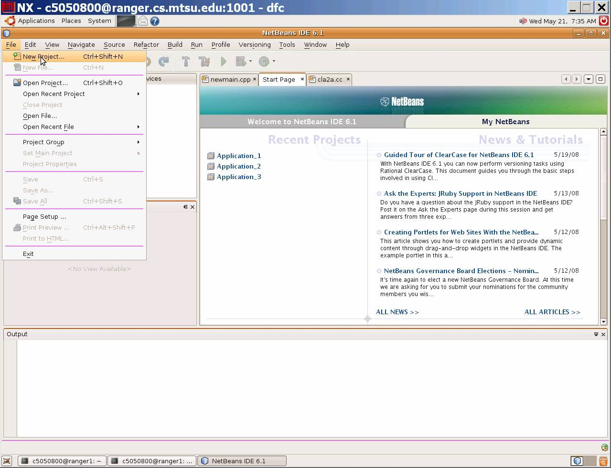
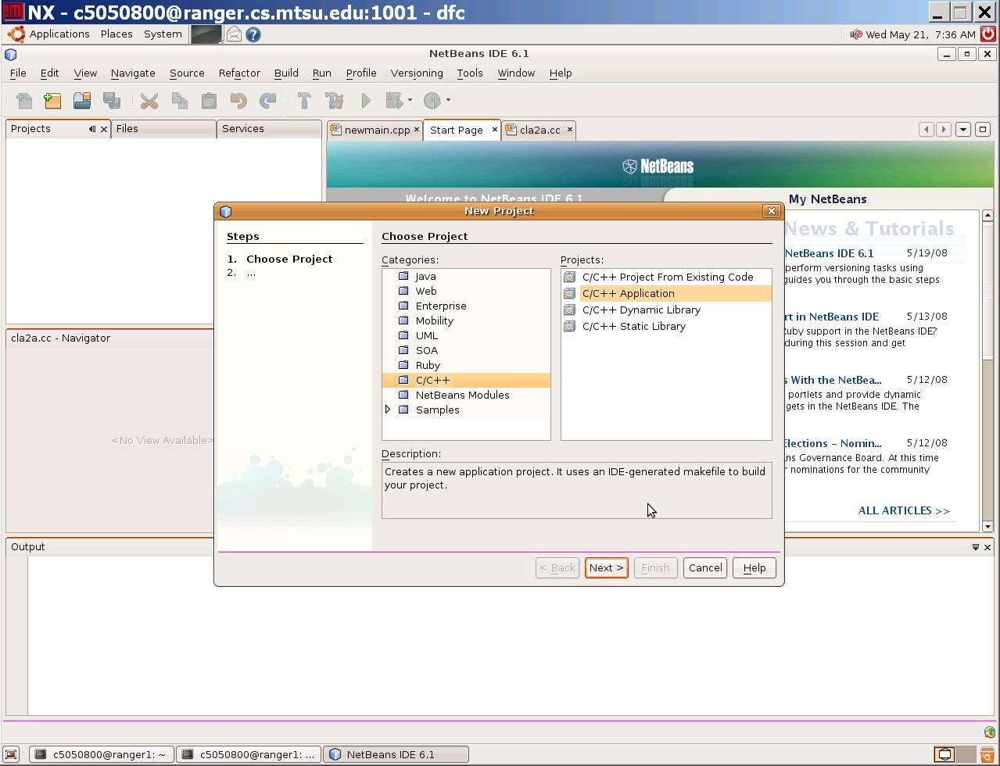
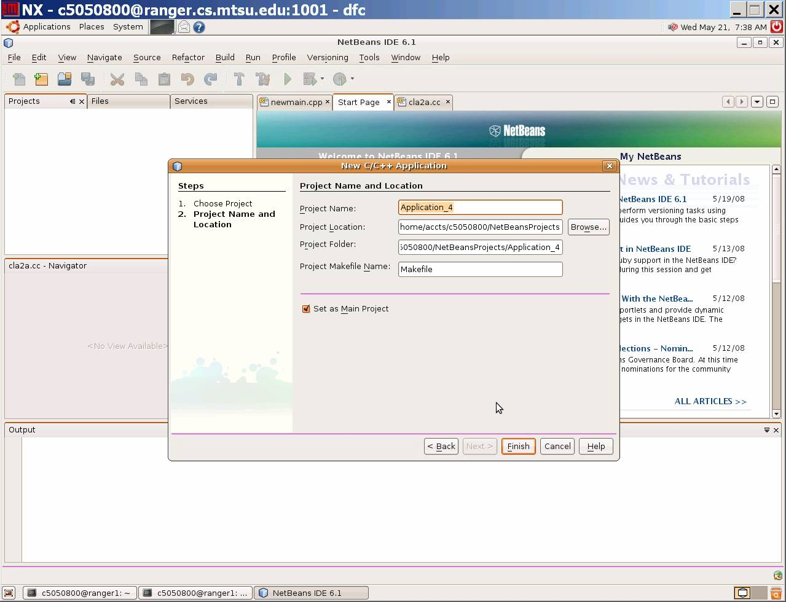
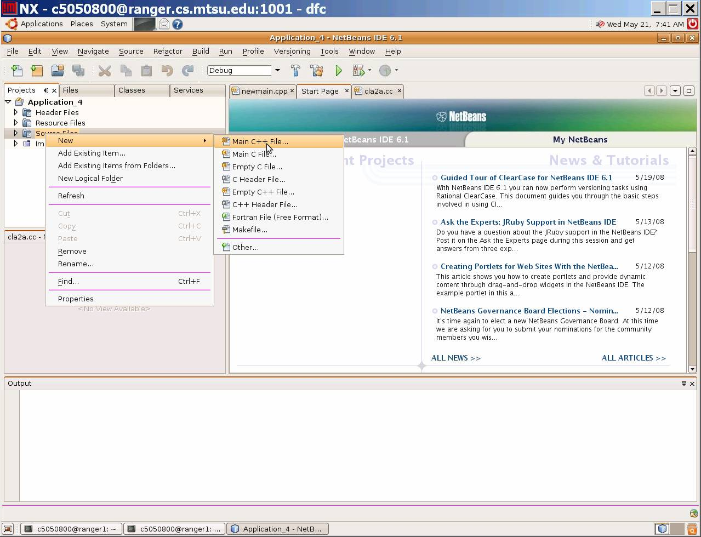
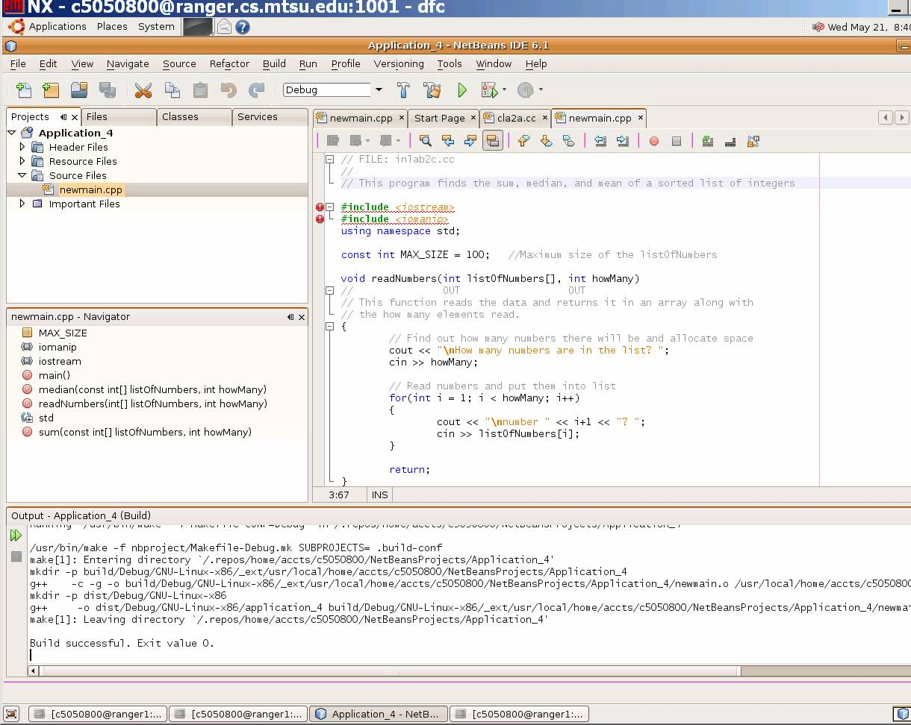
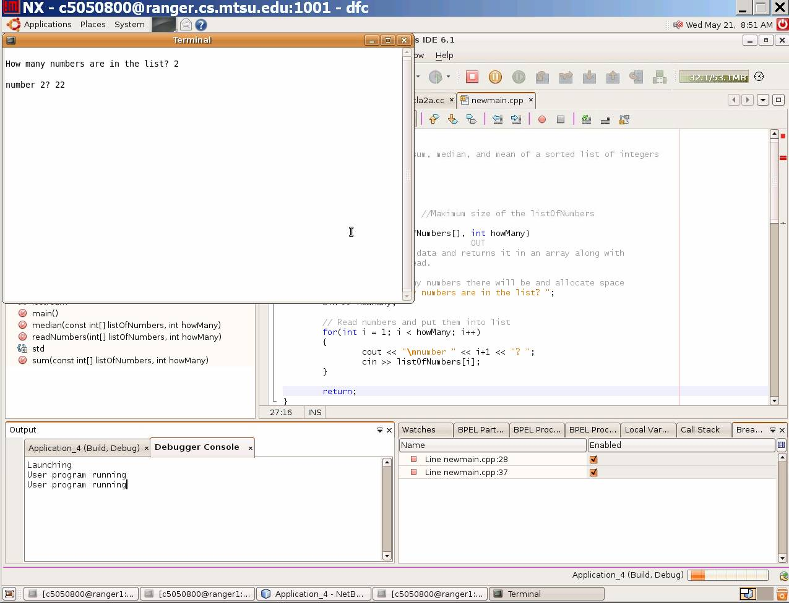
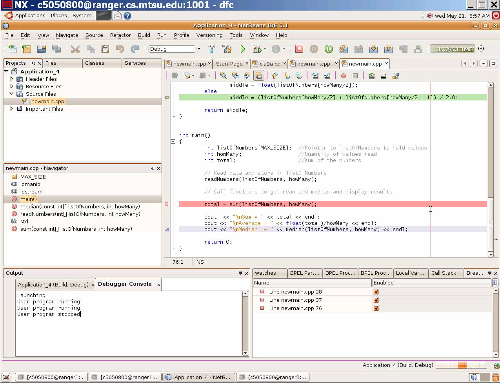
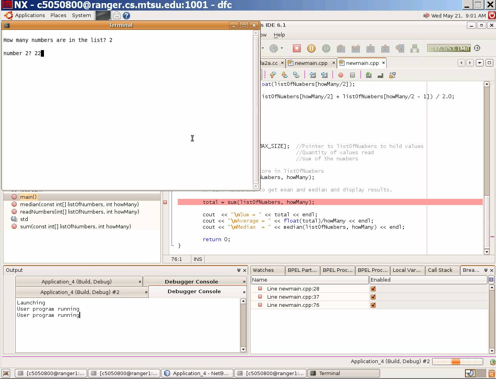
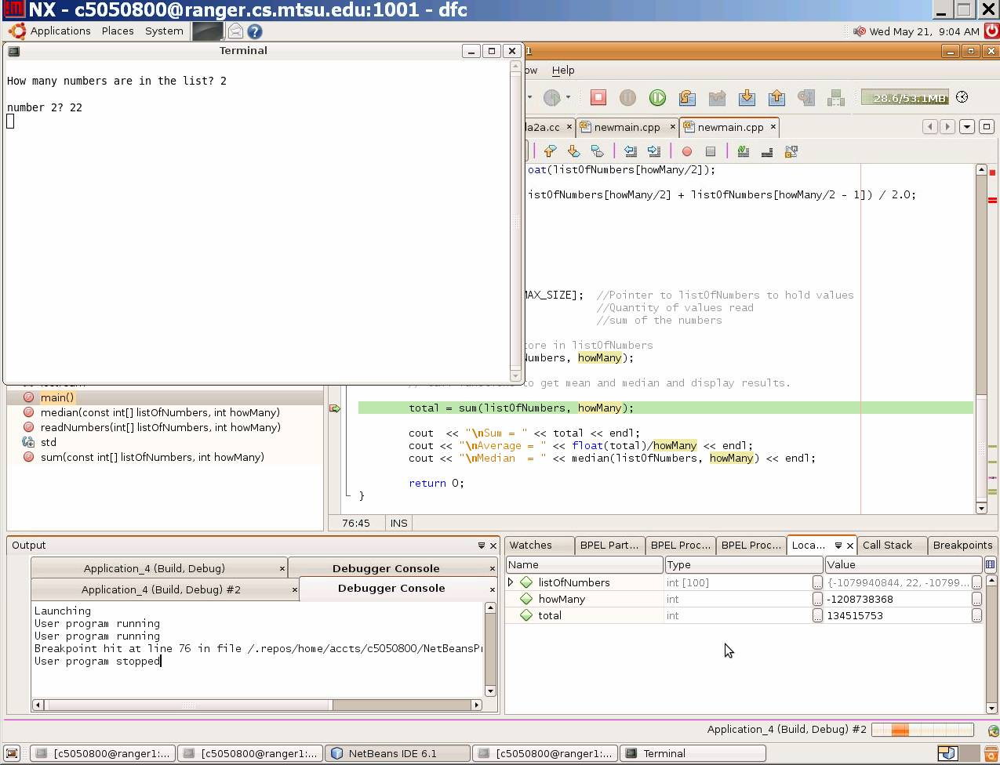
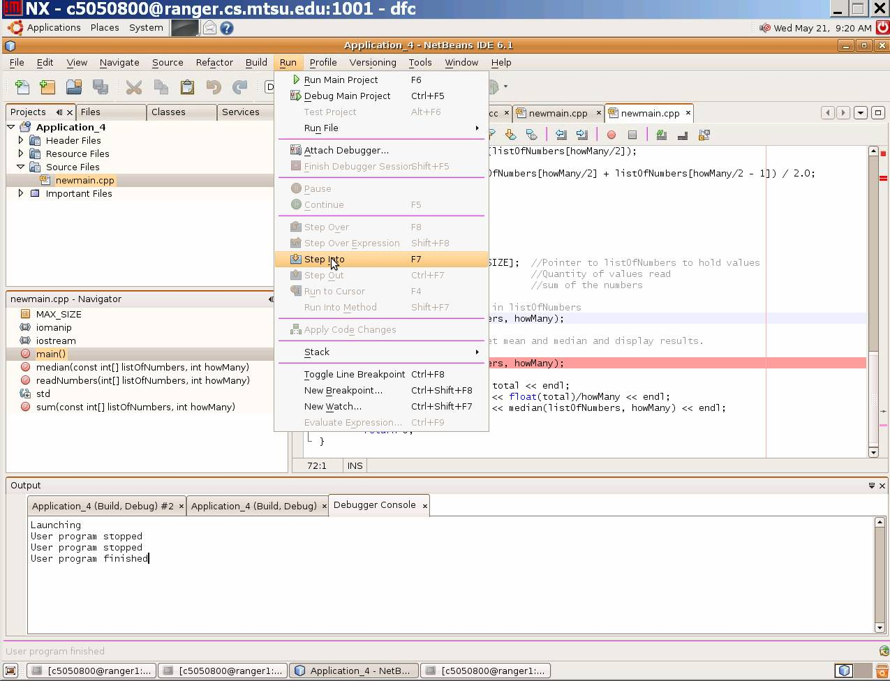

|
|
A. Buggy Problems
B. Debugging Techniques
C. Using the NetBeans Debugger
"segmentation fault: core dumped"
For whatever reason, the outcome of executing the program does not
produce the expected results. There is an error in your
program. Historically these errors have been called "bugs."
The term bug was first coined by Grace Hopper, the inventor of COBOL
and the first assembly language. In 1945, the famous Mark I
computer came to a halt. Workers found a
moth inside the computer, removed the offending beast and the computer
was
fine! From then on, all mysterious problems with computing were
called
bugs. All programmers run into problems related to bugs.
Therefore,
let's now address how to avoid and deal with "bugs".
There are numerous famous bugs in computing. For example, the Russians lost a space ship in mid-flight when an erroneous command transmitted from mission control sent the space ship into a test routine from which it never recovered. There should have been some safety "switch" that prevented the accidental execution of such a test sequence.
A multi-million dollar X-ray machine killed at least two people by administering excessive doses of radiation. The cause of the error was traced to a certain sequence of editing commands. One day programmers may need "malpractice insurance" like physicians do today to protect themselves in such situations.
Can bugs be avoided? Yes and no. Software Engineering is
dedicated
to developing techniques for building better software. Our goal
is
to be as good at building software as an engineer is at building a
bridge.
Bridges rarely fail just as software should rarely fail. To help
reduce
errors in software we have developed paradigms of software
development.
A paradigm is a method with all its related steps and techniques (i.e.,
an
approach). In the 1970's, a software development paradigm called
the
Waterfall paradigm was developed. It was so named because
each
step or phase supplies information to the next like water flows over a
waterfall.
The phases are as follows:
| Analysis | ||||
| Design | ||||
| Implementation | ||||
| Testing | ||||
| Maintenance |
In the analysis phase, requirements describing what the software product is to do are determined by interviewing the client. The requirements are analyzed and a specifications document is produced. In the design phase, the specifications document is turned into an architectural design in which the software is broken down into modules. The modules are designed in a more detailed fashion that focuses on procedural detail. The data structures are defined at this point. During the implementation phase, the modules are coded and tested. The modules are integrated and tested as a whole in the testing phase. The maintenance phase includes making changes to the software including corrections and enhancements. Many methods such as step-wise refinement and structured programming have been developed to improve the process of software development. We will focus in this lab (and in this course) on the Waterfall paradigm for software development. The object oriented paradigm is another popular method in use today.
Errors can occur at any phase of software development. Any of these errors can lead to serious problems and result in software that does not function as desired. Given the disastrous results with the software in the X-ray machine, we must take every precaution possible to be sure there are no errors in our systems. Several things have been done.
"Formal languages" have been developed in which requirements can be expressed instead of expressing them in ambiguous and imprecise English. The design can be reviewed by a team of professionals for potential problems. Prototypes can be used to clarify requirements or difficult design algorithms. An appropriate high-level language choice will reduce errors. Code walkthroughs help the developer locate many errors. A code walkthrough is a line-by-line reading of a unit of code by a team of professionals. The purpose of each line in the given program is explained. Good documentation habits and good naming conventions decrease errors too. A good design and a good programmer are the best way to avoid coding errors.
Finally, careful testing must be done before software is released. A later lab will address testing. Testing is the process of showing that errors exist and debugging is the process of localizing, analyzing, and removing suspected errors in the code.
If an instruction is written incorrectly it is called a syntax
error and will be caught by the compiler. If an incorrect
formula or algorithm is used it is called a logic error and
must be caught by the programmer or tester. Errors that are
exposed at run time are called run time
errors (i.e., dividing by zero or array index out of range).
A theory of debugging was developed by Poston that is based on Most Probable Errors (MPEs). MPEs are the most frequent mistakes made by programmers. The most likely place to contain an error is in an IF - THEN - ELSE conditional expression. The second most likely place for errors is in input/output statements and the third is in loops. According to this theory, you should check the conditional expression in any If statement first. Then I/O statements should be checked and finally loops should be examined.
How does one localize and analyze an error? There are standard debugging techniques that can be used. You will practice these in this lab. They are as follows:
A program is written only once but is read many times. Donald Knuth has developed a system, called CWEB , that helps one develop software as a work of literature. Explaining CWEB is beyond the scope of this lab exercise but we must learn to read our programs for debugging purposes and write programs that are readable. If we read our code to ourselves we often read over our errors. It is a good idea to read our code to another knowledgeable person explaining how each line contributes to the solution.
When reading through program code, often just looking at the code d oes not help us identify the logic error(s). To help us locate logic errors, we can insert output (cout <<) statements at strategic places in the code to localize errors. These output statements allow us to trace the path of execution or to trace the value of certain variables as the program is executed to determine what part of the code is not functioning correctly. There are 3 types of traces that can be implemented by placing output statements in the code - subprogram trace, statement trace, and variable trace. A subprogram trace is used to determine the order in which subprograms are called. An output statement that outputs the name of the subprogram is placed at the start of every subprogram to implement a subprogram trace. A statement level trace is used to determine where the execution of the program halts. An output statement can be placed after different statements in the code to determine which instructions are executed before the program halts.
If an answer produced by the program is wrong, we look at variables used to calculate this answer. To implement a variable trace, we print the value of variables involved in the calculation at different places to see where one or more of them became incorrect. When a variable of interest is changed, the new value should be printed with the name of the enclosing block and a line number to help identify where the change occurred. All input to the program as well as input to all subprograms should be checked to make sure the values are valid.
Once we locate and fix the problem, the output statements are no longer needed. They can be removed with the editor and the code recompiled. In some languages such as "C++" there is a mechanism by which the output statements can physically be left in the source code but directions can be given to the compiler to omit them when the last compile is done. If the statements are needed later they do not have to be retyped.
NOTE: For each of the following exercises, indicate answers on the answer sheet.
The program used in Exercise 1 makes use of command line arguments. If you are unfamiliar with command line arguments, after looking at the program code referenced in Excerice 1, you should read Getting Command Line Arguments in C++
NetBeans is an integrated developement environment that
allows a developer to edit, compile/build, debug, and run projects with
components written in multiple languages. It provides simplified code
reuse and has good debugging support. A debugger is a program that controls the
execution of another program for the purpose of locating (and/or
repairing) errors.
NetBeans documentation beyond what is found in this lab can be found at http://www.netbeans.org/kb/index.html
In this lab, we will learn to develop a project written in C++ using NetBeans. In particular, we will learn to use the built-in debugger. With the debugger, you can:
To practice using the NetBeans debugger, we must first
create a new C++ project in NetBeans
Start by logging into ranger using an NX client. See the previous lab if you need to review this process.
Next from the command window, enter/type "netbeans&"
A window similar to the following should appear



Exercise 4: Now, create a new C++ file to be part of this project. Follow the instructions below to create a new C++ file.

Exercise 5: Read
the main program code to get an idea of what the program should do. Compile and run
this program by:


Let's practice debugging this program. First we need to set a breakpoint on a line of code that could potentially show us what the problem is. It should be a line of executable code. Scroll through the code and find the line in main
total = sum(listOfNumbers, howMany);
Set a breakpoint at this line by clicking on the gray area to the left of the line. A red dot should appear as shown below. (If you wish to delete a breakpoint, click on it again. Do not delete the breakpoint you just set. If you accidentally deleted it, then simply reset it.)

Let's run the program and see what happens. Click on the Start the debugger shortcut button across the top of the window (or again do a build and start the debugger from the previous menu choices). Use the same input as you did when you ran the program before.

After you enter the input, the debugger will execute the program up to the breakpoint. It places a green arrowi/line on the break code line.
The current values of different variables are displayed in the right bottom "Output" window under the tab Local Variables View. For example, variable howMany currently has large value (indicating it has not been initialized).

A. What is the current value of the variable total?___
B. What are the current values of the first 4 elements of array listOfNumbers?
________
C. Look at the cout << statement which is two lines below the current program statement (breakpoint). This statement will output the average. Given the current value of the variables, what is the problem with this statement?___
D. From reading the comment before the call to readNumbers(listOfNumber, howMany) in main(), and from reading the header comments in the function readNumbers(), what did the programmer intend for readNumbers() to do to the variable howMany?___
Now let's continue to determine
the cause of the error using the debugger: The value of the variables howmany, total and listOfNumbers are not what you have
expected, right? This suggests that error(s) occurred before the
current line in the program. So lets back up and put a break next to
the previous statement :
readNumbers(listOfNumbers, howMany);
Run the debugger again. (You need to stop the debugger from the
previous run, and start again). This time, when the debugger stops, try
step into the function being called (e.g., readNumbers) by clicking on
the Step Into debugging short
cut button.

The debugger should move to the
first executable statement in function readNumbers.
Step throught the first two statements by clicking Step Over short cut button twice. (add short cut here).
Enter the same information in the input window when prompted as before.
E. What is the
current value of howMany?___
F. Why
is the value of howMany in
function "readNumber" differ from its value in the main function right
after the call to function "readNumber"? How would you fix
it?___
Click on the "Step Over"
short cut button until the debugger moves back to the main function.
H. How do you set a breakpoint in NetBeans?___
I. Once all the breakpoints are set, how do you begin execution of the program?___
J. How do you inspect the value of a variable during debugging?___
K. How do you continue
the execution of the program after a breakpoint has been reached?___ L.
This part of the lab requires you to print out the program from NetBeans.
To print the program from NetBeans :
M. In a terminal window (not NetBeans) on ranger change to the directory that contains your copy of the inlabAc.cpp that was used in NetBeans.
Create a script file that contains a listing
of the program, a compile of the program, and the run of the program.
Print
the script file on the printer. Turn in this print out.
Your program should be printed from the lab laser printer. Collect the print
out and write down your name on the front page.
A browser with the source file should appear in a few seconds. From the browser, print the file.
Exercise 6 Continued
This can be done by using the following commands in a terminal session
ranger $ cd ---location of your main.cpp file----
ranger $ script claA.log # for starting script with name claA.log
$ ls -l # for showing the list of the current directory
$ aCC newmain.cpp # if the name of the program is newmain.cpp
$ a.out # to compile the program
$ exit # to exit from script
ranger $ lph claA.log # to send the script file to the printer
Turn in your answer sheet and the printouts from exercises 1, 2, 6L, and 6M. Be sure to mark the errors on the printout from Exercise 1 and the new "couts" on the printout of exercise 2.